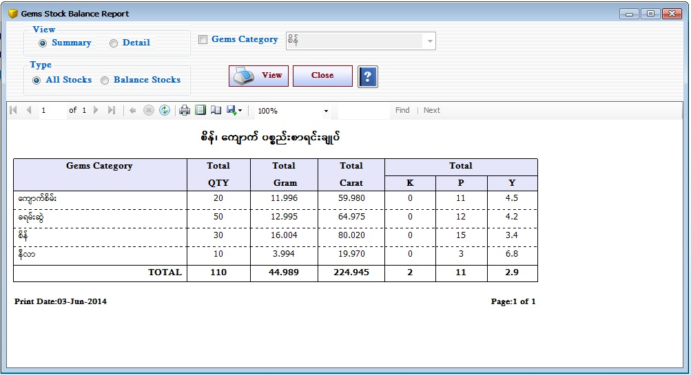
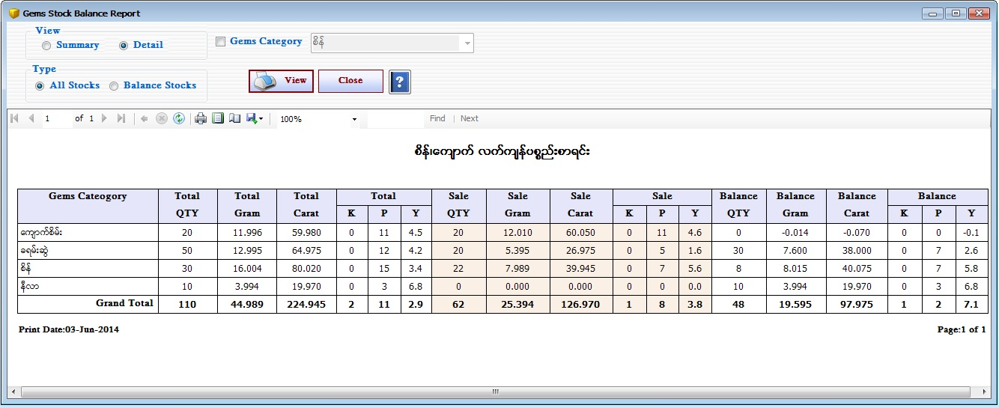

Gems Stock Items Setup


- Reports အောက်ရှိ Gems Stock Items Form ကိုဖွင့်ပါ။
- Gems Stock Items Report သည် စိန်၊ကျောက် ပစ္စည်းများ၏ အဝင်စာရင်း၊ လက်ကျန်စာရင်းများကို ပြန်လည် ကြည့်ရှုသော Report Form သည်။
- Gems Stock Items ရှိ ပစ္စည်းအားလုံးကို ကြည့်ချင်ပါက All Stocks ကို ရွေးချယ်ပြီး ကြည့်ရှုရမည်။
- Balance Stock ကို on ထားပါက ဆိုင်ရှိလက်ကျန် ပစ္စည်းများကို ကြည့်ရှုခြင်းဖြစ်သည်။
- By Given Date ကို on ထားပါက မိမိကြည့်လိုသော From Date နှင့် To Date ကိုရွေးချယ်ပေးရပါမည်။ From Date နှင့် To Date အတွင်း ရှိသော စိန်ကျောက်ပစ္စည်းစာရင်းများကို တွေ့ရမည်ဖြစ်သည်။
- စာရင်းချုပ်အလိုက်ကြည့်ချင်လျှင် Summary ကို ရွေးချယ်ပြီး ကြည့်ရှုရပါမည်။
- Detail အလိုက်ကြည့်ချင်ပါက Detail ကို ရွေးချယ်ပြီး ကြည့်ရှုရပါမည်။
- Gold Category အလိုက်ကြည့်ချင်ပါက Gold Category ၏ check box ကို on ထားပြီး မိမိကြည့်လိုသော Gold Category Name ကိုရွေးချယ်ပြီးကြည့်ရှုနိုင်ပါသည်။
- Gems Stock Items Report Form အား အသုံးပြုပြီးပါက Close Button ကိုနှိပ်၍ ပိတ်နိုင်ပါသည်။